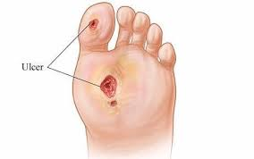
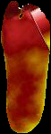

Diabetic Foot Classification using Thermogram
Mid Sem Presentation
Supervisor [Assistant Professor]
2025-02-27
Problem Statement
Given a thermogram of patients foot identify whether it belongs to a diabetic or healthy person, and thereby deducing presence of diabetic foot ulcer.
- Introduction
Brief Background of problem.
- Previous Approaches
- Limitations and Improvement of those Approaches
- Experiment of Explanability
Diabetic Foot Ulcer
A Condition caused by complication of diabeties namely ischemia (lack of blood flow) and neuropathy (damage of nerves).
It manifest as a superficial wound on the surface of foot, but here we tried to identify it from thermographic prospective.

Diabeties and Thermogram
Ischmeia and Neuropathy, causes a diabetic person to have distinct temperature distribution than that of normal person

Proposed Methodology
- Shallow Learning Approach
- Siamese Network Approach
- Learning an encoder to have distilled embeddings of given thermograms.
- Classifiy based on those embeddings.
Siamese Network (Earlier Approach)

CNN Encoder
Siamese Network (Classifier)

SVM Classifier
Results
| Accuracy | Precision | Recall | F1-Score |
|---|---|---|---|
| 0.75 | 0.7 | 0.68 | 0.71 |
Identifying Limitations
Untrained Embeddings
Following is the embedding of Untrained Encoder.
Trained Embedding
- Embeddings after training for 150 Epochs
- Embedding did seperate somewhat but cleary a lot of overlap.
- Quality Embeddings are bad, inter-cluster distance is very low and intra-cluster is very larger.
Addressing the Limitations
Since encoder have poor representation, therefore producing poor embeddings (representation of input).
Proposed Improvements
- Use a pretrained Model
- Extracting feature and train a DenseLayer.
ResNet18 Pretrained Model
Implementation
- Extracting features from Avg Pool Layer.
- Train a Dense Layer with 50 Neurons to produce a embedding of 50 Dimensions.
Training Process of Encoder
Untrained Embeddings
Trained Embeddings
Results
| Accuracy | Precision | Recall | F1-Score |
|---|---|---|---|
| 0.972 | 0.93 | 0.94 | 0.93 |
Future Work
- Finetune Pretrained Model
- Explore other pretrained Model
- Extend approach to work with unsegmented images.
Experiment
An attempt at visualizing evolution of diabetic foot from thermographic perspective.
Healthy
Diabetic
Diabetic
- Learn a Function \(F_\theta(x)=x\) that approximate the Identity, here \(\theta\) are parameter of that function, as x is input (Encoder-Decoder) Model.
- Extract Features from dataset that capture these variations in the dataset (Encoder).
- Continous mapping from those features to thermogram image to be able to observe changes (Decoder).
Diabetic
- Identify whether given set of features represent a diabetic or non diabetic foot with given confidence (Classifer).
Proposed Network 1
PCA + Decoder

Training of Decoder
- PCA causing the reconstructed output to be noisy, due to its inability to model non-linearity.
- Loss is also fluctuating a lot, (It might be because i didnt normalized input, or maybe optimizer overshooting due to noisy output)
- Reconstruction Loss: \(L=\frac{1}{2} (x_o - x_r)^2\)
Proposed Network 2
Architecture of Autoencoder

Training of Autoencoder
Training of Autoencoder
- The learned reconstruction is a lot less noisy, loss is therefore a lot more stable.
- Thermogram still not a perfect reconstruction.
- Reconstruction Loss: \(L=\frac{1}{2} (x_o - x_r)^2\)
Final Result
- UI App to observe variations in resulting thermogram by varying the features.
Kivy App UI
Future Work
- Complete Visualization.
- Implement Explainability of Various Models.
- Finetuning and Experiment with different pretrained models.